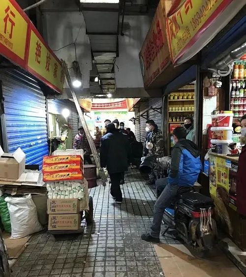
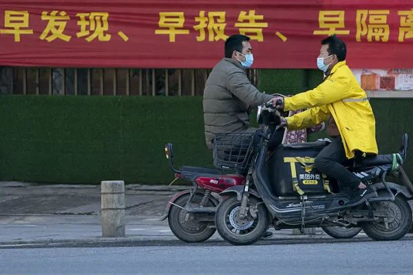
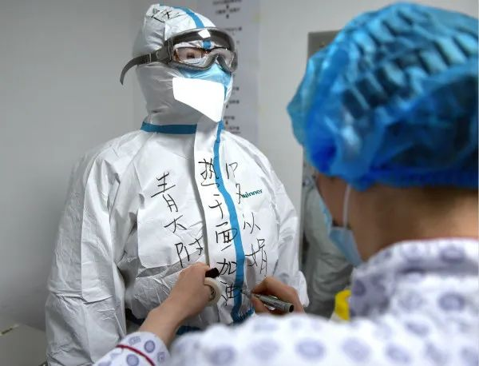
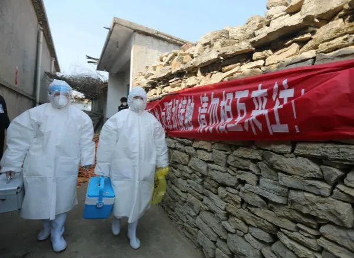
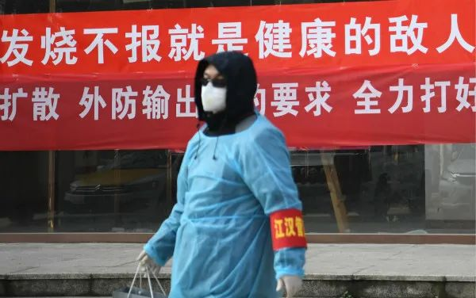

叶青武汉日记：把减下的数加回去
原文链接 备份链接 岛语 非常时期，武汉成了全国人民挂念、祈福的城市。封城后，武汉人民的真实生活是什么样？ 武汉在发生哪些变化？ 正和岛自1月26日起特别推出“叶青专栏”。叶青是一位定居武汉40年的市民，也是一名学者和官员。在过往多期的专 …
作者 | 第一财经 马晓华

突然闯入武汉的新冠病毒，给中国带来了一场非常战“疫”。
2月22日，距离武汉市卫健委发布“不明原因肺炎”的第一则通报（2019年12月31日），仅仅52天。但是病例数，已经从最初与华南海鲜市场相关的27个病例，猛增至全国的7万多例。
截至2月22日24时，全国累计报告确诊病例76936例，累计死亡病例2442例。
作为一种新发传染病，新冠病毒来到武汉之初，人类的确对它一无所知，对它是否具有传染性，对它的传播途径及传播速度的了解也很有限。但是，不代表没有防控的机会。
曾参与了最初流行病学调查（下称“流调”）的工作人员、曾多次参与传染病调查的专家，都向第一财经记者表示，武汉疫情之初，曾错失3个关键的时间窗口。

一：华南市场的人和物
2019年12月30日晚，网传一份“武汉市卫健委”发布的紧急通知：关于做好不明原因肺炎救治工作的紧急通知，明确指出“我市部分医疗机构陆续出现了不明原因肺炎病人”， 这份通知为“有效做好此类病人医疗救治工作”而发。
“不明原因肺炎”这个名词，是SARS之后，当时的国家卫生部为了更好地及时发现和处理SARS、人禽流感以及其他表现类似、具有一定传染性的肺炎而提出的。从严格意义上来说，它不是一个严谨的医学概念，但作为筛选SARS、人禽流感等具有一定特殊临床表现和一定传染性的一类肺炎还是有意义的，也有助于及时发现可疑病例，早期预警并采取相应的防控措施，及早防范。
但是，这一措施并没有在武汉起到相应的预警作用。
“最早的病例上报是在2019年12月26日，这个信息通过区、市到了省级相关部门。同时金银潭医院把样本送到合作的第三方检测公司，结果在12月30日就出来了，是冠状病毒，但不知道是哪一类。”一位自始至终一直在新冠病毒流调现场的工作人员对第一财经记者表示。
他说，“对于我们搞传染病的人来讲，一个初步的认识就是它可能具有传染性，这是冠状病毒的特点。”
2019年12月30日，他来到华南海鲜市场开展流调，直观的感受是：这里通风不好、潮湿，环境极为恶劣。
“这个市场本来有个通风系统，但已经多年没有用了，进去半个小时就会感到闷。如果这个病起源于这里，还具有传染性的话，一定会在这个空间传播。”这位流调人员说，考虑到每到周末这个市场的人流量能达到10万，所以从传染病防控的角度，最初的判断是，需要控制这个市场。
随后，他提出了建议：封闭市场，并且对市场里所有商户进行隔离。

▲几家关闭的店铺，附近店员说是此前销售野味的店铺
2019年12月31日，武汉市卫健委发布的通报称：目前所有病例均已隔离治疗，密切接触者的追踪调查和医学观察正在进行中，对华南海鲜城的卫生学调查和环境卫生处置正在进行中。
2020年1月1日，华南海鲜市场休市。
1月3日，武汉市卫健委发布公告称，疫情发生后，国家和省卫生健康委高度重视，派出工作组和专家组赴武汉市，指导当地开展疫情应对和处置工作。武汉市卫健委在全市医疗机构开展相关病例搜索和回顾性调查，已完成对华南海鲜城的环境卫生处置工作，进一步的卫生学调查正在进行中。
1月5日，武汉市卫健委再发通报称，在国家和湖北省的支持下，已经采取7方面防控措施：
一是全力救治患者。
二是对所有病例均开展隔离治疗。
三是继续在全市医疗机构开展相关病例搜索和回顾性调查。
四是认真开展密切接触者追踪，对已经追踪到的密切接触者按规定落实医学观察，目前没有发现发热等异常症状。
五是对华南海鲜城采取休市措施，并开展环境卫生处置和进一步的卫生学调查。
六是积极开展流行病学调查。
七是配合国家和省开展病原鉴定（包括核酸检测和病毒分离培养）和病因溯源，防控工作正有序进行。
但防控，其实并不那么有序。
“既然已经初步查到是冠状病毒，就应该警觉，立即封闭市场，隔离所有商户，销毁所有产品。但并没有这样做，华南海鲜市场属于半关，商户都走了，商品也流了出去。”这位流调人员表示。
为什么当初不应该放走商户和商品呢？
“因为我们在流调时发现，发病的患者并不是卖野生动物的，而是离野生动物摊位有一定距离的其他摊位。一共13个摊位的销售人员患病，而且还不是紧挨着的摊位。”该流调工作人员说，由此可以判断，病毒一定在这个空间传播，虽然当时还没有更多证据证明病毒的传染性，但人传人有可能性，也存在病毒已经交叉传染到其他商品上的可能性。
他表示，从流行性传染病的防控来讲，应该遵循“疑是从是”的原则——不管是不是人传人的病毒，第一步也要对华南海鲜市场的商户和商品进行处置。

▲2月16日，一名市民和一名外卖员在武汉市中北路上擦肩而过 。新华社图
流调还发现，病毒的第一波传播是在2019年12月22日到26日左右，所以市场的商户需要隔离。
这一发现，在2月17日中国疾控中心的一篇论文《新型冠状病毒肺炎流行病学特征分析》中得到印证：2019年12月31日之前，已经有104人发病。
不过，最基本的信息上报之后，并没有引起相关部门的注意。由于没有从科学上找到“病原体”，这些碎片化的信息并没有让相关政府部门当即采取全面封锁市场的措施，进而放走了大批传染源。
早发现、早报告、早隔离、早治疗是控制新发传染病流行的最有力措施，所以世界卫生组织（WHO）曾建议对于新发传染病要采取早期的围堵政策，用医学和非医学（区域封锁、停学和停工等）干预策略和措施，迅速阻断疫情传播。
但是，对于新冠病毒蔓延的早期，武汉错误了第一次围堵机会，遏制病毒的“机会之窗”开始缩小。

二：医务感染和人传人
围绕防控新冠病毒，最初的决策一直在等待科学的研究结果：病毒是什么，是否人传人。
由于一直在等待病原体的检测结果，2019年12月30日的“类似冠状病毒”的检测报告并没有影响到决策。
“对于冠状病毒，至少要第一时间提醒老百姓，它的传播距离是5米，需要佩戴口罩。也需要考虑气溶胶可以传播到20公里以外。政府部门可能需要时间研究，需要开会决策，但是防控措施不能拖延，否则就是一个大雷。”一位病毒学家在1月3日时表示。
在尚未有答案的等待期，新冠病毒在开始快速蔓延。
“从1月1日起，武汉医疗机构的门诊、诊所发热患者增多。但当时还没有诊断试剂，没有专业指导，医护防护也不到位。武汉三甲医院的三级防护设备都不多，更不用说二级医院和诊所了——他们只有隔离衣和口罩。”上述流调人员表示，最早的医护感染出现在1月7日左右。“这个时候已经显现了人传人的迹象。当时有两个诊所的医生被感染，但是由于没有确诊，也没法上报。”
流调人员了解到的基层真实信息，藏匿在背后。公开的信息中，新冠肺炎的病例数仍止步不前。
而且在2019年12月31日、2020年1月3日、5日、11日的四则通报中，武汉市卫健委明确告诉公众“未发现明确的人传人证据，未发现医务人员感染”。
后期大量回顾性信息，显然不支持这一结论。
比如，“字节跳动医务基金”的名单显示，华中科技大学同济医学院附属同济医院陆医生于1月7日确诊。
不过，上述流调人员表示，当时诸多信息确实都很碎片化，如果不能及时发现，决策层很难作为决策依据。
“但从流行病学来讲，根据这些迹象是可以采取措施的，而且应该立即采取措施，才能把传染源控制起来，阻断传播。”这位流调人员表示。
他也发现，越来越多老人去了医院，因为老人经常到超市买菜，感染的机会比其他人群要多，而医院的发热门诊也成为了交叉感染的场所。这场大范围的传播已经开始了。
那么，“人传人”是如何被忽略了的呢？

▲2月20日，在华中科技大学附属同济医院光谷院区，一名医护人员在即将进入病区的同事防护服上写下“热干面加油”字样。新华社图
1月8日，第二批国家新型冠状病毒感染肺炎专家组到达武汉，其中包括北京大学第一医院呼吸和危重症医学科主任王广发，后来他也被确诊。在接受媒体采访时，王广发说，在武汉期间掌握的资料有限，并未发现明确的人传人证据。
王广发表示，当时拿到的资料，就是发表在《柳叶刀》上的最初41例患者的病例。进入到病房看到的是一个个病人，没有办法掌握所有病人的情况。
1月26日，北京中日友好医院曹彬及北京协和医学院王建伟作为共同通讯作者，在《柳叶刀》上发表了名为《武汉市2019年新型冠状病毒感染患者的临床特征》的文章，研究对象是截至1月2日的41例确诊患者。
王广发也表示，怀疑到有人传人，也看到那些聚集性病例，但是聚集性病例可能是人传人，也有可能是聚集性暴露引起的，“根据我们当时掌握的资料，没有明确的证据显示有人传人。特别是医务人员的感染。”
“王广发说的是对的，他当时可能真的没有看到人传人的数据。”一位多次参与传染病调查的专家告诉记者，单从地方上获得的汇报资料中，无法判断人传人，其中也没有医护人员的感染情况。
“在这种情况下，只有实地继续开展临床调研，详细询问患者的病史、接触史，调查医院到底有没有医务人员感染，如果有的话，是上报了还是没法上报。如果这些信息属实的话，就必须把真实的情况汇报上去，以便及时调整防控策略，阻止疫情蔓延。”这位专家说。
这位专家还表示，真正的信息分析和研判决策，一定还要同时基于实地调查研究。他举例说，“作为一个上级的医生，听完下级医生的汇报以后，我要是负责任的话，就必须亲自去实地看这个病人，亲自去问病人的病史，亲自去看每个化验结果，这样我才能做一个诊断，而不是连实地调查研究都没做，就给出诊断或结论。因为年轻医生获得的信息往往会不全面，而且汇报时又把他认为不重要的信息给过滤了。”

▲2月10日，王莉莉（左）和同事一起走街串巷做流行病学调查。新华社图
显然，最初提报上来的信息，由于缺失了基层流调以及真实发生在医院里的病例，导致了信息的不全面、不客观。
而专家组当初之所以做出没有明确的人传人的判断，就是只根据提报上来的已经被过滤的信息进行研判，没有实地调查研究。
缺乏重要的实地调查研究，有些专家比如王广发的判断失误就不可避免了。
上述专家感叹说，“疫情之初，一些专家的判断都直接影响了决策。”
香港大学“新发传染性疾病国家重点实验室”主任管轶在1月中旬接受大公报采访时表示，冠状病毒最长潜伏期是15天，而自1月3日后内地无新增传染病例，可以判断此次疫情已经得到控制。从目前看，病患症状不重，即使有人传人，也非常有限。
管轶还表示，传染源清楚了，疫情也控制住了，“我们已经可以看到胜利的曙光，相信民众可以过个好年”。
当时管轶还强调，武汉疫情只有一例死亡，同时患者还有腹部肿瘤及慢性肝病。可以判断，此次疫情与SARS不同，SARS是出现超级传播者后才出现大幅传播的，但武汉肺炎病毒与SARS相比传播性不强，同源性和相似度没有这么高。他还特别指出，不要夸大病毒的传染疫情。
“这些专家的意见和言论，无疑都影响了决策，从而错过了（防控）时机。”上述专家表示，在国外，做决策分析时一定要基于整体信息（既不是碎片化信息，也不是来源不准确的信息），并且要进行实地调查研究。
上述专家也认为，初期的信息的确是碎片化的。一个最明显的例子就是上述41个病例，如果单纯以此为基数来看，新冠病毒的致死率是很低的。但这个结论仅是基于有限病例得出的。
一些专家的不慎重研判，以及面对公众所给出的不严谨意见，不仅误导了公众，也影响了决策。毕竟，权威专家的意见，是要考虑进去的。
由此，“人传人”的信息没有被及时传递出，导致必要的全民防控没有实施。但病毒，依然在快速蔓延。
直到1月20日，钟南山院士在接受采访时表示，存在人传人，已经有医护感染。于是，新冠肺炎的正式防控战 “打响”。
1月20日，国家卫健委发布1号公告，将新冠肺炎纳入《中华人民共和国传染病防治法》规定的乙类传染病，并采取甲类传染病的预防、控制措施。
但此时，根据中国疾控中心的回顾性研究，实际发病人数已经达到6174例。

三：封城后社区失守
随着中国科学家对新冠病毒的认识越来越深入，对病毒的传播力和致病特点越来越明确，相关部门经过综合研判，提出了在武汉和湖北部分地区实施围堵策略的建议。
1月23日，武汉封城。
但随后，武汉一时失序：因为市内交通切断，居家隔离的发热患者不能抵达医院；因为医院床位紧张，医疗资源透支，医疗防护用品短缺，患者得不到有效救治，进而诱发了交叉感染……
“武汉的战疫，战场不仅在急救的医疗场所，更在可能发生传染的所有场所，防控的最终目标是做到控源、隔离、减增量。”中央指导组社区防控基层专家组负责人吴浩接受第一财经采访时表示，从战略上看，必须尽快以一个一个社区为单位、网格式管理、联防联控，从而控制疫情。
他表示，从预警、防控到救治，公共卫生实际上一个整体系统。“前方支援了很多精兵强将，但是如果不把防控关口前移，后方也会源源不断往医疗战场上输送病人。”
在传染性疫情的防控体系中，社区是预防和分诊的第一道防线。社区的防控效果，直接关乎防疫战的成败。
2月6日，吴浩作为基层新型冠状病毒感染防控专家组来到武汉。
“这里很安静，基本上看不到战争的氛围，但超市满是人。我们到了小区，看到也有部分人不戴口罩，我们感觉完了。你派多少将士在前方做前锋也不行，你的后卫控源没有解决。居家隔离指导不到位，学校隔离指导不到位，培训机制没有做好，培训指南不是发下来就行了，得学、得有人解读，没人解读，根本不知道怎么做。居委会大妈都很热情，但是她们不知道怎么干，最后越战越累。”吴浩说，前方再强的战士，也架不住源源不断地给他输送病人。
所以，“我们做的第一件事就是培训，告诉他们怎么做。磨刀不误砍柴工，这一刀必须先下去。”吴浩说。
之前几天的走访中，吴浩发现武汉的防控工作仍然存在着一些问题，例如小区没有进行封闭管理、生活垃圾没有进行科学处理、社区网格化排查需要进一步加强。
“这些都给传染源带来了进一步传播的机会。”吴浩表示。
社区失守让武汉失去了又一道防线，封城也无法遏制病例数字的上升。中国疾控中心的研究也显示，仅在1月20~31日间，武汉发病人数就达到了26468例。
至此，传染病早期释放的防控时间窗口，已经关上。

▲2月9日，一位防控志愿者在武汉市江汉区唐家墩街西桥社区准备进行查访工作。新华社图
结合武汉市社区的实际管控情况，专家组提出一系列具体的防控措施，包括立即封闭小区、加强网格化管理；对居家隔离人员进行生活垃圾分类消毒管理；在超市实行人流管控、优化购物流程、菜入社区等；组织社会力量，志愿者、不需在岗党员等社区报到，加强社区防控力量；加强地毯式排查力度，进行逐户排查，加大社区宣传力度，提高居民主动防疫意识。
“意见一经提出，立刻得到当地政府的采纳。”吴浩表示。
2月9日，武汉市江岸区政府发布了小区实行封闭管理的文件；2月11日，武汉市政府发布了在全市统一实行小区封闭管理的文件。2月14日，武汉市新冠肺炎疫情防控指挥部发布通知，明确住宅小区封闭管理主要措施，要求住宅小区一律实行封闭管理，小区居民出入一律严格管控。
“通过这种包片管理机制，与街道各功能单位联防联控，社区医护人员下沉，建立疫情防控小组，进行网格化管控、实现地毯式排查，有力实现了对疫情的防控，协助区CDC完成密接患者的流调和排查、对辖区各小区实行封闭式管理、充分发挥智慧医疗的指导作用对辖区居民进行居家健康指导，制定生活垃圾消毒和处理流程等细节措施，充分发挥了疫情防控的网底作用，守好社区疫情防控的第一道关。”吴浩认为。
吴浩说，当前遏制疫情扩散的关键是“四类人员”全部分类集中隔离。此外，还要注意一些细节，比如社区人员上门做居家隔离指导时，如果防护不足，也面临较大的风险，甚至成为传染源。吴浩建议，这时候可以灵活应对，比如不一定非要敲开门，可以隔门指导，也可以通过微信视频“面对面”的指导。
“在防控指导的过程中，随着疫情的不断演变，一些实际的困难和新发的情况不断出现，工作重点也在不断变化，这需要我们不断地调整策略，早日打赢这场阻击战。”
【相关阅读】


原文链接 备份链接 岛语 非常时期，武汉成了全国人民挂念、祈福的城市。封城后，武汉人民的真实生活是什么样？ 武汉在发生哪些变化？ 正和岛自1月26日起特别推出“叶青专栏”。叶青是一位定居武汉40年的市民，也是一名学者和官员。在过往多期的专 …
原文链接 备份链接 2 月 17 日，《中华流行病学杂志》杂志上，中国疾病预防控制中心新型冠状病毒肺炎应急响应机制流行病学组最新发表新冠肺炎研究。 在对截至 2020 年 2 月 11 日中国内地报告的 超过 7 万病例的流行病学特征进行 …
原文链接 备份链接 要允许公卫流行病学专家发表意见 允许医生们讨论； 要信息透明，不要怕社会小混乱 小混乱可以避免大乱 2月7日晚，医护人员做好准备即将进入武汉客厅“方舱医院”进行工作。 据国家卫健委通报的数据，截至2月14日24时，全 …
原文链接 备份链接 作为中国疾控中心原副主任，杨功焕是坦诚的。多年国际组织和疾控系统工作的经验让她对新冠病毒疫情中萌生的一些问题更加敏感。 她认可武汉“封城”，对中国公共卫生硬实力有信心，但又不满新冠病毒疫情初期的反应迟缓，质疑公共卫生的 …
原文链接 备份链接 世界卫生组织（WHO）总干事谭德塞在2020年1月30日宣布：新冠疫情的全球性暴发，已构成“国际关注的突发公共卫生事件”（PHEIC）。 谭德塞同时强调，这一宣布是基于新冠疫情在中国以外的发展情况，而非针对中国国内 …